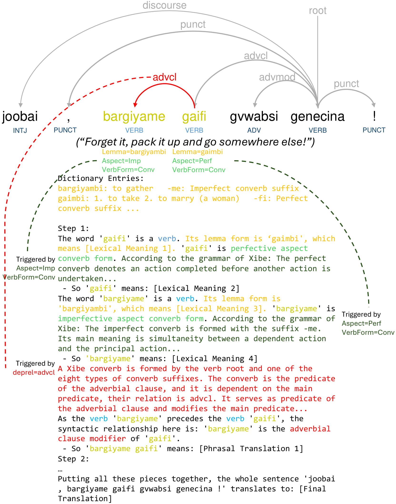

Abstract
Large language models (LLMs) offer a promising approach to machine translation (MT) for extremely low-resource languages by incorporating linguistic resources through in-context learning. However, LLMs often struggle to apply grammatical information effectively during translation. Inspired by recent progress in chain-of-thought reasoning, we investigate whether low-resource MT can benefit from structured intermediate steps of linguistic analysis and grammatical reasoning. We propose a pipeline for automatically generating step-by-step linguistic reasoning traces from Universal Dependencies treebanks, dictionaries, and grammar-rule banks. We evaluate these traces in three settings: in-context learning (ICL), supervised fine-tuning (SFT), and reinforcement fine-tuning (RFT), on Xibe and Chintang as test cases. Our results show that linguistic reasoning traces are most effective as inference-time guidance: in ICL, reliable sentence-specific traces substantially improve translation performance across most models, languages, and metrics. In contrast, using the linguistic reasoning traces as training data yields smaller and less consistent gains, as models learn the trace format but often generate erroneous content. These findings suggest that LLMs can leverage grammatical information for low-resource MT when given reliable linguistic analyses, while learning to generate such analyses remains a major bottleneck.

Overview
Many low-resource languages lack large parallel corpora, but have dictionaries, grammar descriptions, and annotated treebanks. LingReason explores how to turn these linguistic resources into explicit, sentence-specific reasoning traces that guide LLMs through lexical analysis, morphosyntax, grammar-rule application, phrase composition, and final translation.
The project first generates these traces automatically from UD trees, dictionary glosses, and modular grammar rules, then evaluates whether they help LLMs translate in three settings: in-context learning (ICL), supervised fine-tuning (SFT), and reinforcement fine-tuning (RFT).
Key Findings
-
1. Generated linguistic reasoning traces help most with ICL
Linguistic reasoning traces are most effective when used as in-context guidance, where they provide reliable sentence-specific analyses and substantially improve translation performance. -
2. Training on synthetic linguistic reasoning traces gives smaller gains
SFT with reasoning traces yields smaller and less consistent improvements because models learn the trace format but still often produce imperfect reasoning content. Further RFT also does not bring meaningful improvements. -
3. Accurate linguistic analyses remains the bottleneck
LLMs can leverage grammatical information for low-resource MT when provided with reliable linguistic analyses, but learning to generate such analyses remains a key bottleneck.
Resources
arXiv Preprint
Read the full paper describing the motivation, trace-generation pipeline, experiments, and findings.
GitHub Repository
Access the public code for generating reasoning traces and running training, inference, and evaluation scripts.
Hugging Face Dataset
Download generated Chintang example data for supervised fine-tuning, in-context evaluation, and direct inference.
BibTeX
@misc{pei2026reasoning,
title = {Reasoning over Grammar: Can Synthetic Linguistic Reasoning Traces Enhance Low-Resource Machine Translation?},
author = {Pei, Renhao and Liu, Yihong and Pyysalo, Sampo and Schuetze, Hinrich and Ji, Shaoxiong},
year = {2026},
eprint = {2606.03782},
archivePrefix = {arXiv},
primaryClass = {cs.CL},
url = {https://arxiv.org/abs/2606.03782}
}